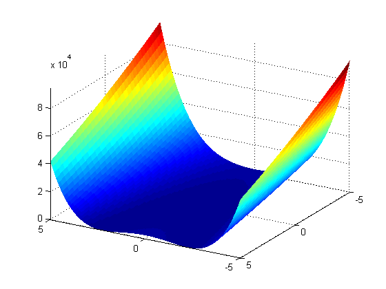
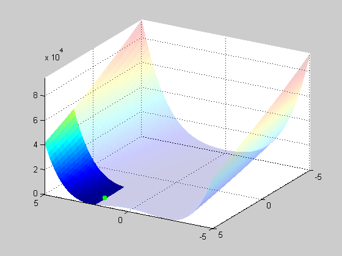
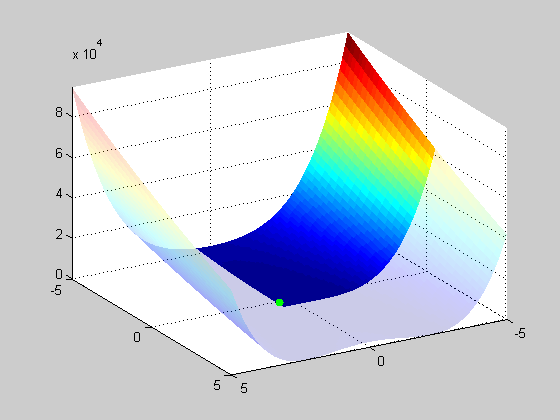
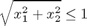
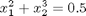
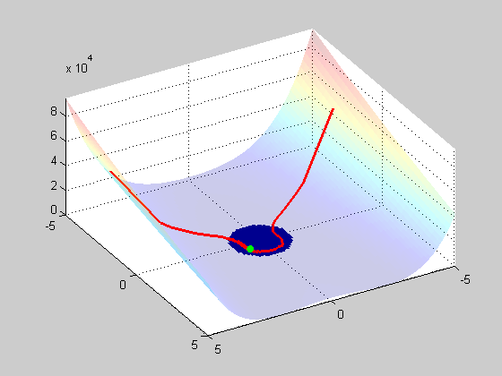

Contents
Constrained optimization with FMINSEARCH
function testoptimize
Introduction
Usage
first, define a test function:
clc, rosen = @(x) (1-x(1))^2 + 105*(x(2)-x(1)^2)^2;
this is the classical Rosenbr\"uck function, which has a global minimum at f(x) = f([1, 1]) = 0. The function is relatively hard to optimize, because that minimum is located in a long narrow ``valley'':
k = 0; range = -5:0.1:5;
z = zeros(101);
for i = range
m = 0; k = k + 1;
for j = range
m = m + 1;
z(k, m) = rosen([i, j]);
end
end
[y, x] = meshgrid(range, range);
surf(x, y, z, 'linestyle', 'none'), view(-150, 30), axis tight
 Optimizing the fully unconstrained problem with OPTIMIZE indeed finds the global minimum:
solution = optimize(rosen, [3 3])
solution =
1.0000
1.0000
Imposing a lower bound on the variables gives
[solution, fval] = optimize(rosen, [3 3], [2 2], [])
solution =
2.0000
4.0000
fval =
1.0000
in the figure, this looks like
zz = z; zz(x > 2 & y > 2) = inf;
ZZ = z; ZZ(x < 2) = inf; ZZ(y < 2) = inf;
figure, hold on
surf(x, y, zz, 'linestyle', 'none', 'FaceAlpha', 0.2)
surf(x, y, ZZ, 'linestyle', 'none')
view(-150, 30), grid on, axis tight
plot3(solution(1), solution(2), fval+1e3, 'g.', 'MarkerSize', 20)
 Similarly, imposing an upper bound yields
solution = optimize(rosen, [3 3], [], [0.5 0.5])
zz = z; zz(x < 0.5 & y < 0.5) = inf;
ZZ = z; ZZ(x > 0.5) = inf; ZZ(y > 0.5) = inf;
figure, hold on
surf(x, y, zz, 'linestyle', 'none', 'FaceAlpha', 0.2)
surf(x, y, ZZ, 'linestyle', 'none')
view(150, 30), grid on, axis tight
plot3(solution(1), solution(2), fval+1e3, 'g.', 'MarkerSize', 20)
solution =
0.5000
0.2500
 Optimize with x(2) fixed at 3. In this case, OPTIMIZE simply removes the variable before FMINSEARCH sees it, essentially reducing the dimensionality of the problem. This is particularly useful when the number of dimensions N becomes large.
optimize(rosen, [3 3], [-inf 3], [inf 3])
ans =
1.7314
3.0000
Also general nonlinear constraints can be used. A simple example:
nonlinear inequality:

nonlinear equality :

options = optimset('TolFun', 1e-8, 'TolX', 1e-8); [sol, fval, exitflag, output] = optimize(rosen, [3 -3], [], [], [], ... [], [], [], @nonlcon, [], options);
Note that nonlcon is a subfunction, listed below. In a figure, this looks like
zz = z; zz(sqrt(x.^2 + y.^2) <= 1) = inf;
ZZ = z; ZZ(sqrt(x.^2 + y.^2) >= 1.2) = inf;
zZ = z; zZ(x.^2 + y.^3 >= 0.5 + 0.1) = inf;
zZ(x.^2 + y.^3 <= 0.5 - 0.1) = inf;
figure, hold on
surf(x, y, zz, 'linestyle', 'none', 'FaceAlpha', 0.2)
surf(x, y, ZZ, 'linestyle', 'none')
xX = x(isfinite(zZ)); xX = xX(:);
yY = y(isfinite(zZ)); xX = xX(:);
zZ = zZ(isfinite(zZ)); zZ = zZ(:);
[xX, inds] = sort(xX); yY = yY(inds); zZ = zZ(inds);
xyz = [xX, yY, zZ];
for i = 1:length(xX)-1 % line-command is *somewhat* inconvenient...
l = line( [xyz(i, 1); xyz(i+1, 1)],[xyz(i, 2); xyz(i+1, 2)], [xyz(i, 3); xyz(i+1, 3)]);
set(l, 'color', 'r', 'linewidth', 2)
end
view(150, 50), grid on, axis tight
plot3(sol(1), sol(2), fval+1e3, 'g.', 'MarkerSize', 20)
 Note that the output structure contains a field ``constrviolation'':
output
output =
iterations: 123
funcCount: 230
algorithm: 'Nelder-Mead simplex direct search'
message: [1x196 char]
constrviolation: [1x1 struct]
The contents of which shows that all constraints have been satisfied:
output.constrviolation
ans =
nonl_eq: {[0] [0]}
nonl_ineq: {[0] [0]}
end
function [c, ceq] = nonlcon(x) c = norm(x) - 1; ceq = x(1)^2 + x(2)^3 - 0.5; end